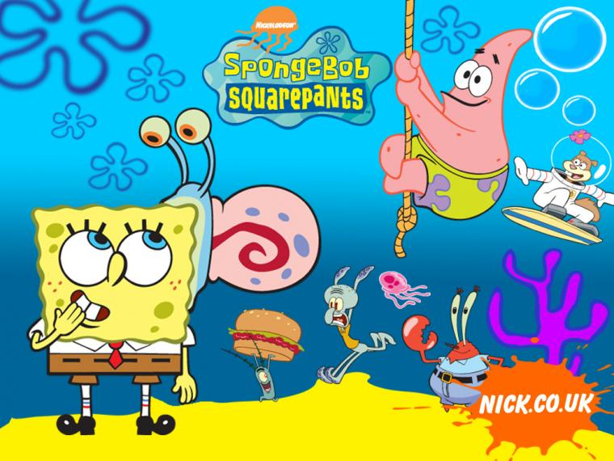

About Spongebob Squarepants
SpongeBob is a childish and joyful sea sponge who lives in a pineapple with his pet snail Gary in the underwater city of Bikini Bottom.
Spongebob and his friends
Spongebob's Characteristics
- He works as a fry cook at the Krusty Krab.
- He attends Mrs. Puff's Boating School.
- His bedtfriend is Patrick
Spongebob's Friends
Spongebob has some awesome friends. Click on the links below to read more